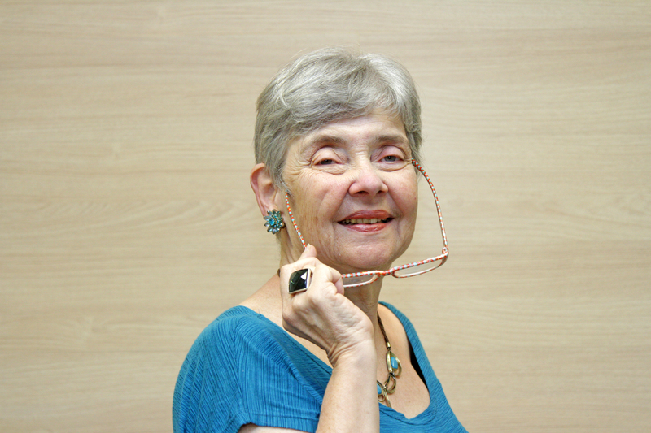

Bibliografia: Professor titular da UNICAMP, graduação em Engenharia Elétrica (1976) e mestrado em Informática (1979), ambos pela Pontifícia Universidade Católica do Rio de Janeiro, doutorado em Computer Science - University of Waterloo (1985), posdoutorado no INRIA, Franca (1990) e livre docencia em Bancos de Dados (UNICAMP, 1992). Membro da Cooordenação de Área de Ciência e Engenharia de Computação da FAPESP (2004-2014), da Coordenação Adjunta da FAPESP, para o programa eScience e Data Science (2014-) e do Comitê Assessor de Computação do CNPq (2013-2016). Foi coordenadora do Comitê Assessor de Computação do CNPq (2001-2002); na CAPES, foi vice-coordenadora do Comitê de Computação (1998-2000), e membro do mesmo Comite (2008-2010). Desenvolve pesquisas em gerenciamento de dados científicos, em particular desafios associados à heterogeneidade, volume e complexidade desses dados, para vários tipos de aplicações multidisciplinares do mundo real, em particular em biodiversidade e planejamento agro-ambiental. Foi presidente da Sociedade Brasileira de Computacao (2003-2007). Recebeu o premio Newton Faller (SBC) , o premio Change Agent (ACM e Anita Borg Institute) e por 3 vezes o Premio de Excelencia Academica Zeferino Vaz (UNICAMP - 1997, 2001 e 2009). Em 2007, outorgada Doctor Honoris Causa pela Universidad Antenor Orrego, Trujillo, Peru e em 2008 admitida na Ordem Nacional do Mérito Científico, como comendadora. Em 2012, tornou-se ACM Distinguished Speaker. Em 2013, recebeu o premio Reconhecimento Docente pela Dedicacao ao Ensino (UNICAMP - associado a toda a carreira). Em 2015,outorgada Dr. Honoris Causa pela Universite Paris Dauphine,. França. Membro do Council da Research Data Alliance (2018-2020) e do Conselho da Association of Computing Machinery (2018-2020). Em 2018, recebeu o Premio de Merito LatinoAmericano em Informatica, outorgado pelo CLEI (Centro de Estudios LatinoAmericanos en Informatica). Tambem em 2018, eleita para a Academia Brasileira de Ciencias. Em 2020, tornou-se membro do Conselho Cientifico da WDS (World Data System), Em 2021, eleita Fellow da World Academy of Sciences (TWAS)
Contato: http://lattes.cnpq.br/4643608666899616

Keynotes
Claudia Maria Bauzer Medeiros - Universidade Estadual de Campinas, Instituto de Computação
